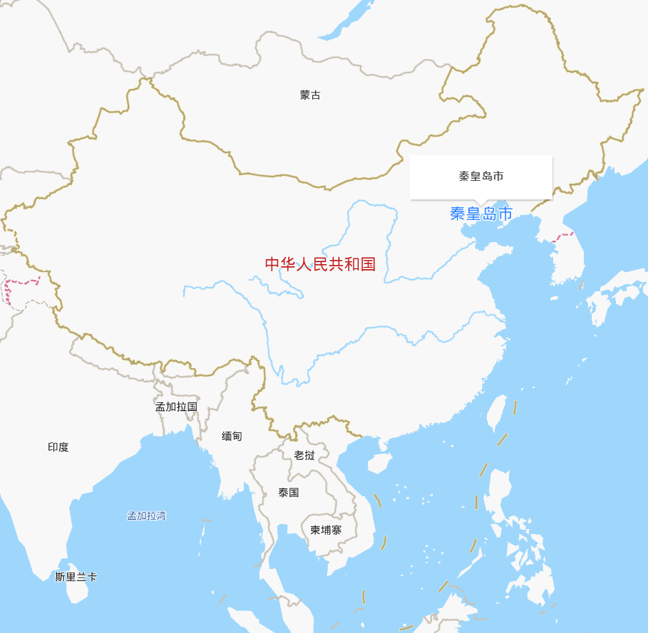
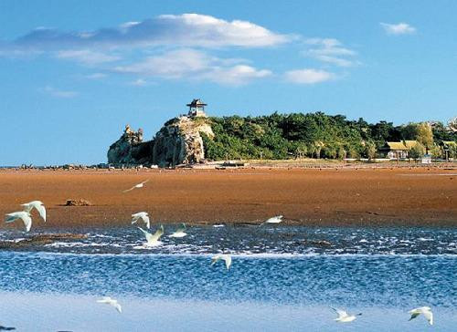
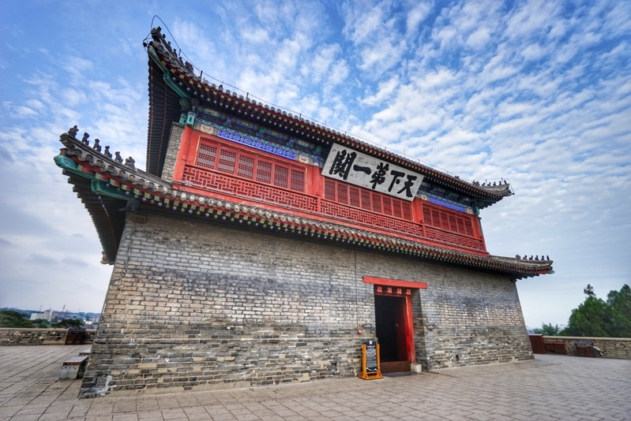
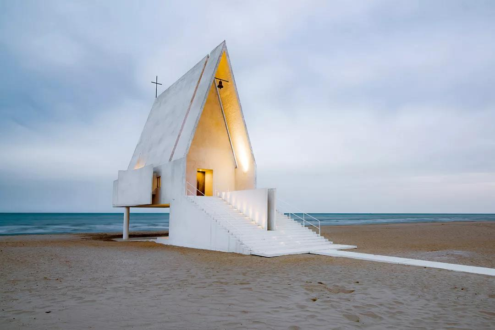
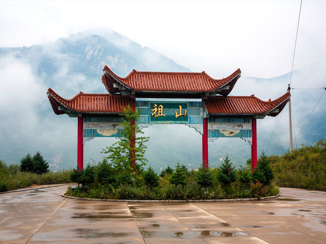
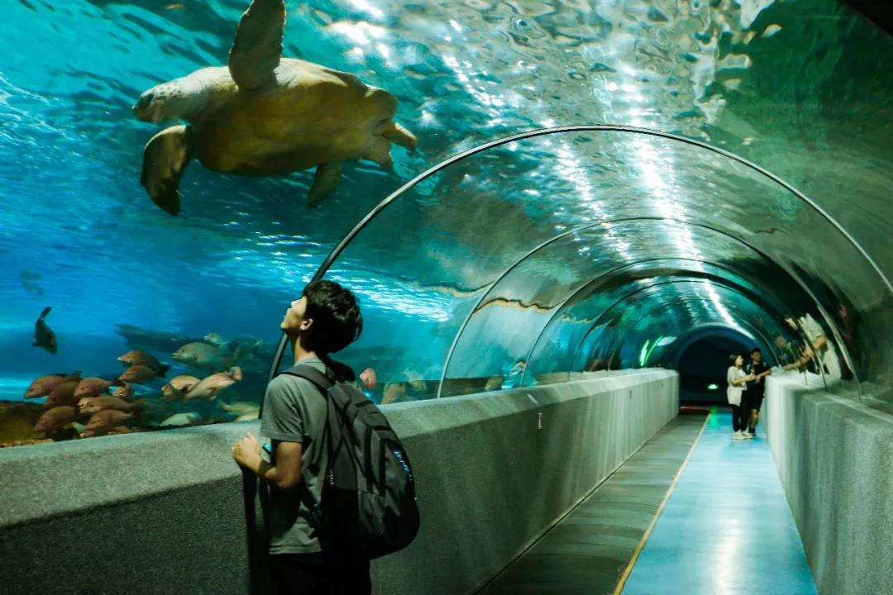
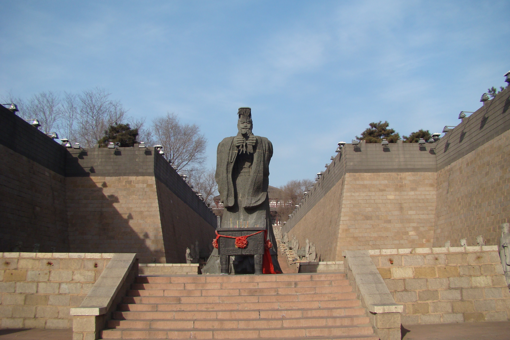

我的家乡是河北省秦皇岛市。秦皇岛是中国环渤海地区重要的港口城市，著名的滨海旅游、休闲、度假胜地。
秦皇岛地处中国华北地区、河北东北部、南临渤海，是华北、东北和西北地区重要的出海口、全国性综合交通枢纽。
秦皇岛因秦始皇东巡至此派人入海求仙而得名，是中国唯一一个因皇帝帝号而得名的城市，因《浪淘沙·北戴河》而闻名遐迩，
这里汇集了丰富的旅游资源，是驰名中外的旅游休闲胜地，山海关区是国家历史文化名城。
秦皇岛曾获中国最美海滨城市、全国十佳生态文明城市、中国北方最宜居城市、中国最佳休闲城市、中国最具爱心城市、中国最具幸福感城市等荣誉。


北戴河风景区
北戴河风景名胜区位于秦皇岛市西南部，距市中心16公里。北戴河景区西起戴河口，东到鹰角亭、鸽子窝，
风景区面积19.5平方公里，是驰名中外的旅游避暑胜地。

天下第一关
在碧波万顷的渤海之滨，绵延起伏的燕山山麓，有一座雄伟的城楼，依山临海，景色十分壮丽，
这就是历史名关，万里长城东部的重要关隘，被誉为“天下第一关”的山海关。

阿那亚社区
游客说：“秦皇岛阿那亚这个社区，就能满足我对‘面朝大海，春暖花开’的生活的憧憬，来到这里我才懂得了什么是生活。”
阿那亚，孤独而文艺，繁荣而不喧闹，这是一个美丽而低调的社区。

祖山
祖山，山势跌宕，峰峦陡峻，因渤海以北、燕山以东诸峰都是由她的分支盘拨而成，故以“群山之祖”名之。
她立峭岩作脊梁，以瀑流注血脉，搽娇花饰容颜，披葱茏为秀发。

新澳海底世界
在优美音乐的伴随下，你不仅可以欣赏到海豚的水中华尔兹、空中顶球、跳圈、跨杆、环场鞠躬跳等高难度的精彩表演；
还可以领略海狮投篮、海豚表演、水中霹雳舞等精彩海上表演。

秦皇求仙入海处
据史料记载，始皇三十二年（公元前215年），秦始皇东巡至碣石，派燕人卢生在如今的海港区东山公园处入海求仙。
后来根据这一记载，将这座城市命名秦皇岛。